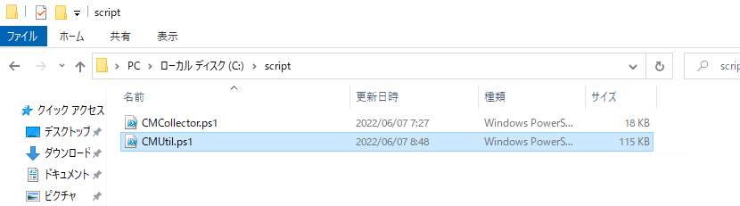
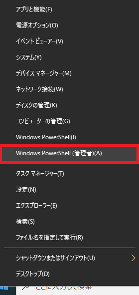
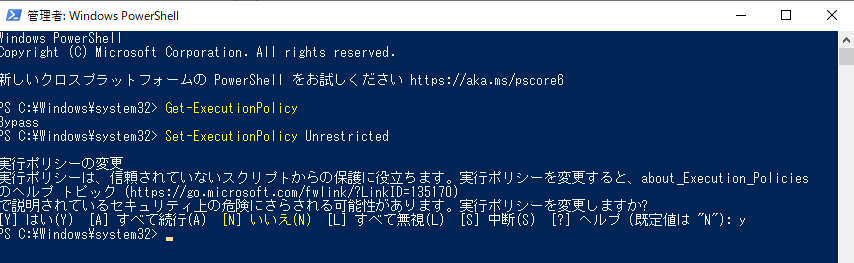
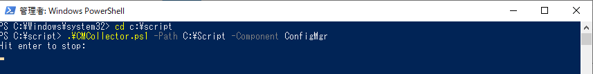
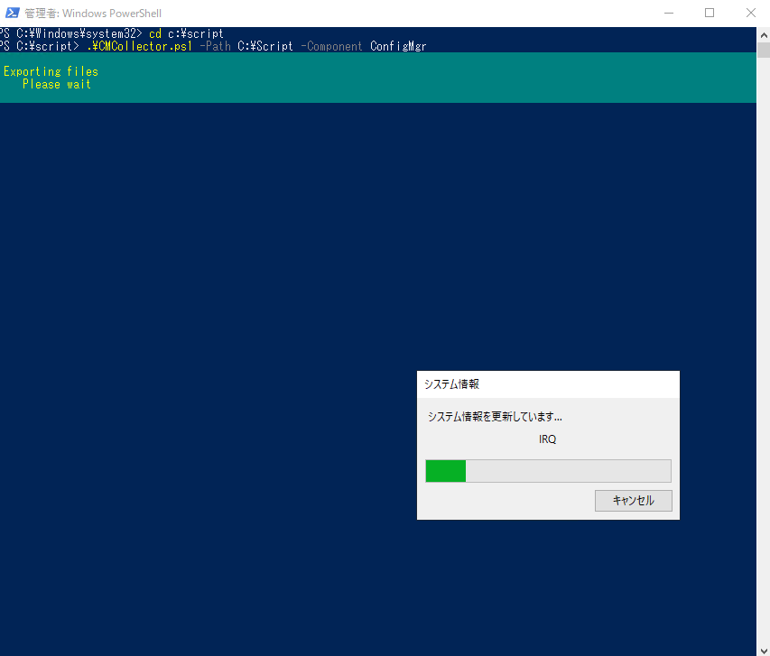
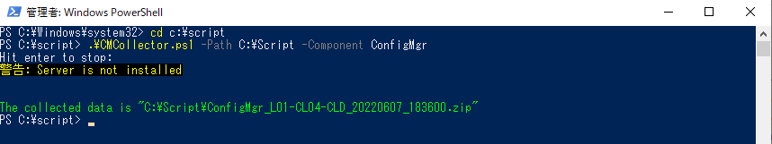
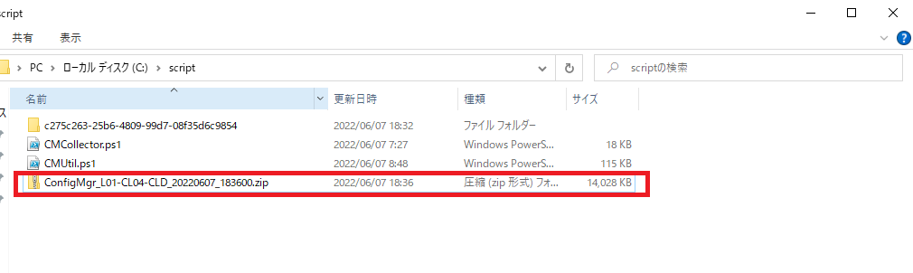

Configuration Manager の初期調査では CMCollector スクリプト による資料採取をお願いさせていただいております。
調査に必要なシステム情報やイベント ログ等の各種情報を、自動で採取可能なスクリプト ファイルによる情報採取をお願いします。 (情報採取に伴うシャットダウンや再起動は行われません)。
後述の手順で CMCollector.ps1 を実行し、出力された zip ファイルを弊社までお寄せくださいますようお願いいたします。
以下の URL からダウンロードした CMCollector.zip を採取対象の端末にコピーします。なお、本スクリプトは適宜アップグレードを行っておりますので、お手数をおかけしますが常に最新のスクリプトをダウンロードしお使いくださいますようお願いいたします。
https://github.com/microsoft-jpcssmem/ConfigMgr/raw/master/CMCollector.zip
スクリプトの格納先として、資料採取対象のコンピューターに C:\script フォルダを作成ください。
ダウンロードした CMCollector.zip を展開し、上記の C:\script フォルダーに CMCollector.ps1 と CMUtil.ps1 を以下のように配置します。

Powershell を管理者として起動します。

起動した PowerShell コンソールで以下のコマンドを実行し、PowerShell スクリプトを実行できるように、実行ポリシーを変更します。
1 | # 変更前の実行ポリシーを確認します。確認したポリシーは後で戻せるようメモしておいてください。 |

情報採取が終わった後は、変更前のポリシーに設定を戻していただいてかまいません。
1 | cd C:\script |

※以下は取得中画面です。

。


出力例）
1 | The collected data is "C:\Script\ConfigMgr_L01-CL04-CLD_20220607_183600.zip" |